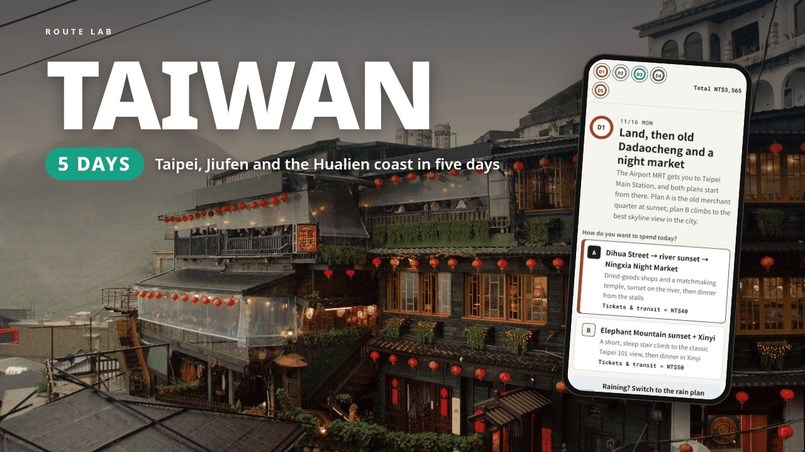

5-DAY ITINERARY · TAIWAN
Two days in Taipei, Jiufen's lantern stairs at dusk, then the train down the east coast to Hualien for Qixingtan, the Qingshui Cliffs and the parts of Taroko that are actually open. Many Taroko trails have been closed since the 2024 earthquake and later typhoons, so this plan only uses places that were open as of 2026-10-30 and links each one to its official notice.
This page is a free outline of the itinerary: where each day goes, what is in the file and who it suits. The download adds the stop-by-stop times, a map link and a checked price for every stop, and a budget that adds itself up as you pick.

The neighbourhoods and main stops for each of the 5 days. The download has the times, the order, a map link and a price for every stop, and the alternative plan for each day.
Dihua Street, the Xiahai City God Temple, sunset at Dadaocheng Wharf and Ningxia Night Market. Or the Elephant Mountain climb for the Taipei 101 skyline at sunset.
Jiufen in the afternoon, staying for the lantern stairs at dusk, on the direct 1062 bus. Or Houtong Cat Village first, then Jiufen.
Train to Hualien, Qixingtan Beach, the Pine Garden and Dongdamen Night Market, timed to the 4-a-day Taiwan Tourist Shuttle 310.
The open side of Taroko by taxi: the Chongde Trail to the Qingshui Cliffs 2nd viewing platform (about 15 minutes' walk), Tianxiang inside one of Highway 8's daily release windows, and the Taroko Terrace Trail (optional, check the official site before you go (選擇性行程，出發前請先查官網確認)). Or, with no car, the Visitor Center with the Dekalun Trail and the optional Terrace trail on a one-day bus pass. A typhoon/closure backup keeps you in Hualien city (Pine Garden, the Cultural & Creative Park, Dongdamen Night Market, or Qixingtan if only the road is closed).
Morning train back to Taipei, then the Taipei 101 Observatory or Huashan 1914 before your flight.
First-time visitors with five days who want Taipei plus the east coast, and want to know what's actually open around Taroko before they go. It's priced for two adults, Monday 11/16 to Friday 11/20, 2026, with two nights in Taipei and two in Hualien. Other dates work too, but check first: Pine Garden closes on the 2nd Tuesday of most months, the Taroko Visitor Center on the Monday of the 2nd week, and Jiufen's last weekday bus back is earlier than at weekends.
It doesn't send you onto the gorge's closed trails, and buses stop at the Visitor Center, so the Tianxiang leg needs a taxi. Taroko status changes; check taroko.gov.tw before you go. Trail and road status can change after storms or earthquakes, so check the official links the day before. The train times quoted are from TRA's timetable search on 2026-10-30 and can change; book TRA seats to Hualien early. It doesn't book anything and doesn't update itself. Hotels, flights and train tickets are up to you.
US$9 on Gumroad. Personal use: for your own trip and the people you travel with. If the file is broken or won't open, you get a fix or a full refund within 14 days.